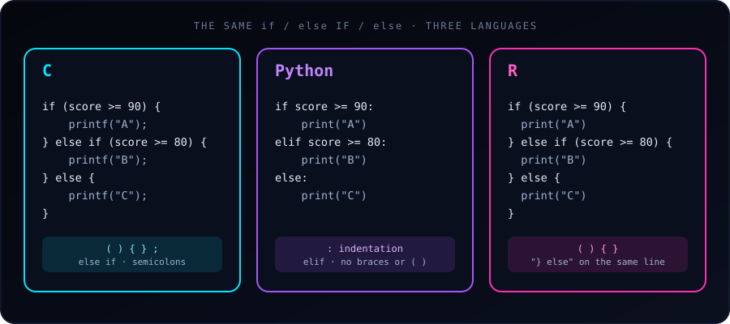

The logic of an if-else statement is identical in C, Python and R: test a condition, run one block if it is true, otherwise run another. What differs is the syntax: how blocks are marked (braces vs. indentation) and how “else if” is written.
The same program in each language (grade from a score of 85):
C uses parentheses () around the condition and curly braces {} for blocks. Multiple conditions use else if, and every statement ends with ;.
#include <stdio.h>
int main() {
int score = 85;
if (score >= 90) {
printf("Grade: A\n");
} else if (score >= 80) {
printf("Grade: B\n");
} else {
printf("Grade: C\n");
}
return 0;
}Python drops the braces and the parentheses. A colon : and indentation define the blocks, and “else if” is contracted to a single keyword, elif.
score = 85
if score >= 90:
print("Grade: A")
elif score >= 80:
print("Grade: B")
else:
print("Grade: C")R looks much like C: parentheses, braces, else if. But it has a formatting quirk: at the top level, else must sit on the same line as the closing brace } of the previous block.
score <- 85
if (score >= 90) {
print("Grade: A")
} else if (score >= 80) {
print("Grade: B")
} else {
print("Grade: C")
}All three print Grade: B.
Direct syntax comparison
| Feature | C | Python | R |
|---|---|---|---|
| Condition wrapper | Requires ( ) |
No wrapper | Requires ( ) |
| Block boundary | { } |
: + indentation |
{ } |
| “Else if” keyword | else if |
elif |
else if |
| Statement end | ; |
Line break | Line break |
| Boolean operators | &&, \|\|, ! |
and, or, not |
&&, \|\|, ! |
| True / false | 1 / 0 (or true / false with <stdbool.h>) |
True / False |
TRUE / FALSE |
| Equality test | == |
== |
== |
Gotchas in each language
else on a new line fails at top level
This works inside a function or a { } block, but at the console or top level of a script it is a syntax error, because R finishes the if statement at the end of the line:
if (score >= 90) {
print("Grade: A")
}
else { # Error: unexpected 'else'
print("Grade: B")
}Keep } else { on one line and you never hit this.
- C:
=instead of==.if (score = 90)assigns 90 and is always true. Compile with-Walland the compiler warns you. Python and R reject an assignment in the condition in most forms. - C: no braces means one statement. Braces are optional for a single statement, but adding a second line without them is a classic bug. Always use braces.
- Python: inconsistent indentation. Mixing tabs and spaces raises an
IndentationError. Use 4 spaces everywhere. - R: the condition must be a single
TRUEorFALSE. In R 4.2 and later,if (c(TRUE, FALSE))is an error. For whole vectors, useifelse()(below).
What counts as “true”?
- C: any non-zero value is true;
0is false.if (5)runs. - Python:
0,0.0,"",[],{}andNoneare false; almost everything else is true. - R: only logical values (or numbers, where
0is false and non-zero is true) are accepted, andNAin a condition is an error:if (NA)stops with “missing value where TRUE/FALSE needed”.
One-line versions (conditional expressions)
Each language has a compact form that picks a value:
// C: ternary operator
const char *result = (score >= 50) ? "Pass" : "Fail";# Python: conditional expression
result = "Pass" if score >= 50 else "Fail"# R: if-else is itself an expression
result <- if (score >= 50) "Pass" else "Fail"R bonus: vectorized ifelse()
Base if works on one value. To apply a condition to every element of a vector, use ifelse():
scores <- c(95, 85, 72, 40)
ifelse(scores >= 50, "Pass", "Fail")
#> [1] "Pass" "Pass" "Pass" "Fail"The Python equivalent for arrays is numpy.where(scores >= 50, "Pass", "Fail").
Which should you use?
There is no “better” version, only different conventions. If you know one, the others are quick to learn: the concept transfers, and only the punctuation changes. Pay most attention to Python’s indentation and R’s } else rule, since those are the two places where a small formatting slip changes the meaning or breaks the program.
See also: 10 Real-World if / else Examples in C.